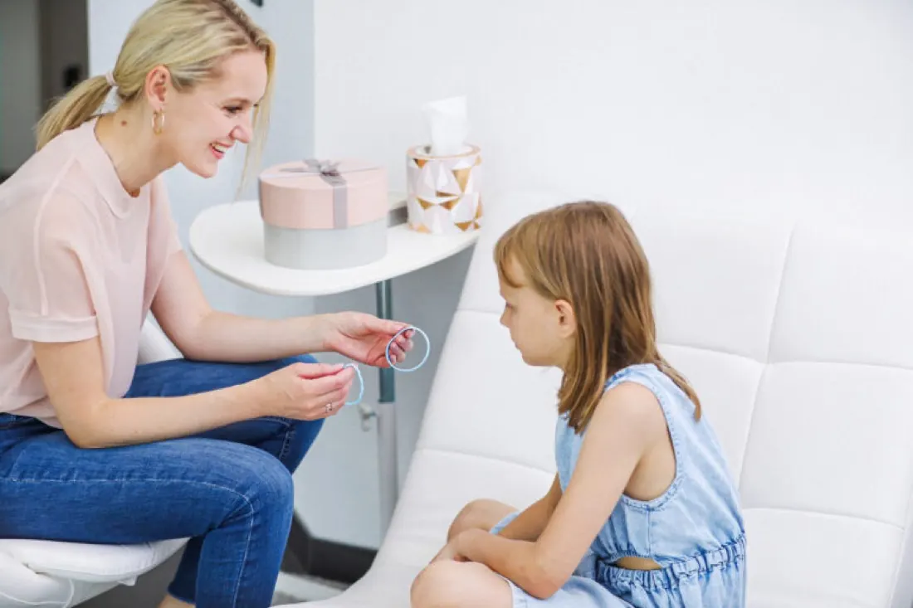
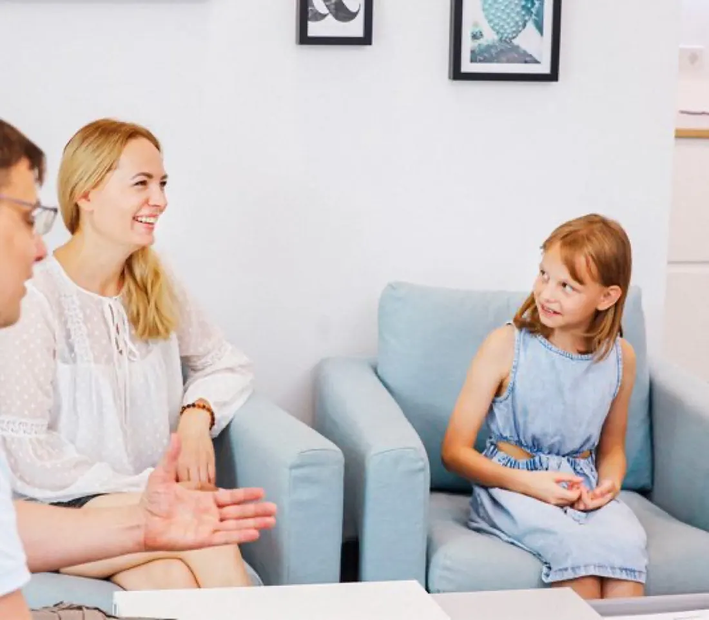
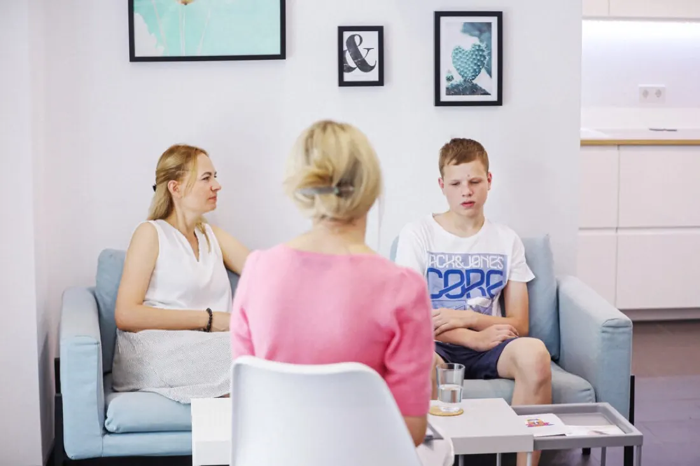

Wenn dein Kind wieder leichter durchs Leben gehen soll.
Ängste, starke Emotionen, Probleme in der Schule oder körperliche Beschwerden belasten oft die ganze Familie. Doch Veränderung muss nicht kompliziert sein.

Und du weißt nicht mehr, was du noch tun kannst?
Du musst die Lösung nicht alleine finden – und auch nicht wissen, warum dein Kind so reagiert. Das finden wir gemeinsam heraus.
„Viktoria ist super für Kinder – und super für Erwachsene.“
Eine Mutter erzählt, wie sie Viktoria für ihren Sohn gefunden hat – und später selbst zu ihr kam.
5,0 · 88 Google-BewertungenKinder brauchen einen Zugang, der zu ihnen passt.
Dein Kind muss nicht stundenlang über sein Problem sprechen. Für dein Kind kann es sich wie ein Spiel oder eine kleine innere Reise anfühlen – und trotzdem arbeiten wir gezielt an dem, was es belastet.

Bilder
Innere Bilder erreichen, was Worte allein oft nicht schaffen.
Gefühle
Wir arbeiten mit dem, was dein Kind fühlt – nicht nur mit dem Verhalten.
Vorstellungskraft
Was Kinder beim Spielen ganz natürlich tun, wird zur Ressource.
Neue Erfahrungen
Aus einer neuen inneren Erfahrung entsteht eine neue Reaktion im Alltag.
Manchmal weiß ein Kind genau: „Eigentlich brauche ich keine Angst zu haben.“
Und trotzdem reagiert der Körper:
Solche Reaktionen laufen oft automatisch ab – reden allein reicht deshalb nicht immer. Wir arbeiten mit dem emotionalen Erleben, damit dein Kind eine schwierige Situation anders erleben und neue Reaktionen entwickeln kann.
Fünf Schritte – im Tempo deines Kindes.
Kennenlernen
Ich möchte verstehen, was dein Kind beschäftigt – und dein Kind selbst kennenlernen, nicht nur das Problem.
Verstehen
Ich erkläre alles kindgerecht. Kein Druck, kein „Du musst“ – dein Kind darf jederzeit sagen, wenn sich etwas nicht gut anfühlt.
Entdecken
Mit Bildern und Vorstellungskraft schauen wir: Was passiert in der Situation, und was fühlt dein Kind dabei?
Verändern
Nicht „Ich muss anders reagieren“, sondern „Ich kann es auch anders erleben“.
Festigen
Die neue Erfahrung wird gestärkt, damit sie im Alltag trägt – Schritt für Schritt.

Aus meiner Erfahrung reichen bei vielen Kindern bereits 2–4 Sitzungen, um deutliche Veränderungen anzustoßen. Jedes Kind ist individuell – nicht möglichst lange, sondern so viel, wie sinnvoll ist.
Themen, bei denen ich häufig unterstütze.
Ängste & Unsicherheit
Prüfungs- und Trennungsängste, Angst vor bestimmten Situationen.
Starke Emotionen
Wut, Traurigkeit, Überforderung – Gefühle, die schwer zu regulieren sind.
Schule & soziale Situationen
Schulängste, Konflikte, Mobbing-Erfahrungen, Schwierigkeiten mit anderen.
Selbstvertrauen & Selbstwert
Wenig Zutrauen, Angst vor Fehlern, ständiges Vergleichen.
Psychosomatische Beschwerden
Wiederkehrende Bauch- oder Kopfschmerzen, wenn eine körperliche Ursache abgeklärt ist.
Belastende Erfahrungen
Schwierige Lebenssituationen oder Veränderungen in der Familie.

Dein Kind ist nicht das Problem.
Wenn ein Kind Angst hat, wütend wird oder sich zurückzieht, gibt es dafür einen Grund. Ich möchte das Verhalten nicht einfach „wegmachen“, sondern schauen, was dein Kind wirklich braucht.
Dein Kind bringt bereits vieles mit:
Ich gebe den Rahmen und zeige den Weg – und dein Kind darf entdecken, was in ihm selbst möglich ist.
Alles, was Eltern mich oft fragen.
Muss mein Kind selbst mitmachen wollen?
Es hilft, wenn dein Kind offen ist – es muss aber nicht wissen, was es verändern möchte. Ich hole es dort ab, wo es gerade steht.
Ist das wie eine klassische Therapie?
Nein, mein Coaching ist keine Gesprächstherapie. Wir arbeiten spielerisch mit Bildern, Gefühlen und Vorstellungskraft – dein Kind muss nicht alles in Worte fassen können.
Wie läuft das Erstgespräch ab?
Das erste Gespräch führen wir telefonisch: Du erzählst, was euch beschäftigt, und wir klären, ob und wie ich dein Kind unterstützen kann. Es ist kostenlos und unverbindlich.
Passt es für euch, besprechen wir den Ablauf und vereinbaren die ersten Termine.
Ab welchem Alter ist Online-Coaching möglich?
In der Regel ab etwa 7–8 Jahren – entscheidend ist, ob sich dein Kind in der Online-Situation wohlfühlt. Bei älteren Kindern und Jugendlichen funktioniert es häufig sehr gut.
Muss ich als Elternteil bei der Sitzung dabei sein?
Das hängt von Alter, Thema und Kind ab – wir klären es im Erstgespräch. Wichtig ist, dass dein Kind sich sicher fühlt.
Du musst heute noch keine Entscheidung treffen.
Erzähl mir einfach, was euch gerade beschäftigt. Im telefonischen Erstgespräch klären wir, ob und wie ich euch unterstützen kann.
Vielleicht beginnt Veränderung genau mit diesem ersten Gespräch.